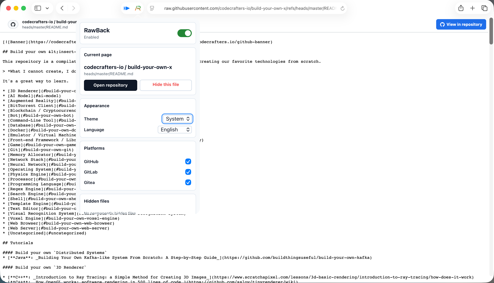
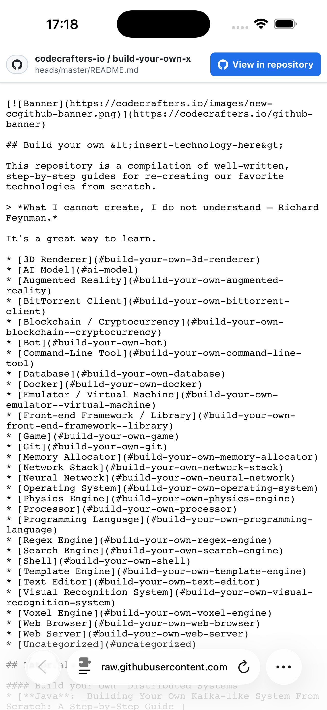

Raw file view
https://raw.githubusercontent.com /codecrafters-io/build-your-own-x /refs/heads/master/README.md
Safari extension and browser add-on
Safari 扩展与浏览器插件
RawBack adds a quiet repository navigation banner to raw Git file views, so one click restores the branch, path, history, and project around the file.
RawBack 会在 raw Git 文件页面加入低干扰的仓库导航条，一键找回分支、路径、历史记录和项目上下文。
Works locally in your browser. No account, no ads, no analytics.
在浏览器本地工作。无账号、无广告、无分析追踪。


Raw file views are useful for copying and reading, but they hide the repository frame. RawBack keeps that frame one click away without taking over the page.
raw 文件页适合复制和阅读，但会丢掉仓库框架。RawBack 把仓库框架放在一步之内，同时不打断阅读。
https://raw.githubusercontent.com /codecrafters-io/build-your-own-x /refs/heads/master/README.md
https://github.com /codecrafters-io/build-your-own-x /blob/master/README.md
The extension stays focused on navigation, preferences, and host coverage, with the visual weight kept out of your raw file content.
扩展只关注导航、偏好和平台覆盖，不把视觉重量压到 raw 文件内容上。
Open the matching repository file page from the raw file URL you are reading.
从正在阅读的 raw 文件地址打开对应的仓库文件页面。
Supports GitHub, GitLab, Gitea, Codeberg, and self-hosted GitLab or Gitea domains.
支持 GitHub、GitLab、Gitea、Codeberg，以及自托管 GitLab 或 Gitea 域名。
Choose theme behavior, enable only the platforms you use, and hide files when needed.
可选择主题、启用常用平台，也能按需隐藏某些文件。
Safari users get the App Store version. Chromium and Firefox users can load the release packages manually.
Safari 用户使用 App Store 版本。Chromium 和 Firefox 用户可以手动加载 Release 包。
Install RawBack on iPhone, iPad, and Mac from the App Store.
在 iPhone、iPad 和 Mac 上通过 App Store 安装 RawBack。
Download the latest package from GitHub Releases.
从 GitHub Release 下载最新浏览器扩展包。